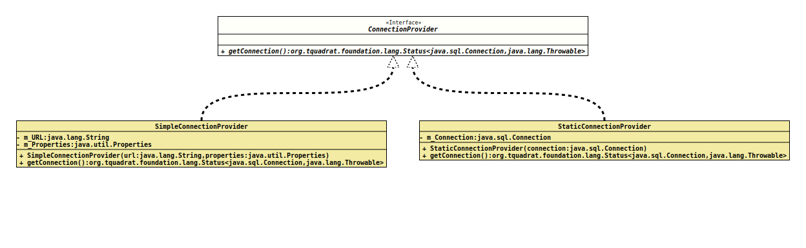

- All Known Implementing Classes:
SimpleConnectionProvider,StaticConnectionProvider
- Functional Interface:
- This is a functional interface and can therefore be used as the assignment target for a lambda expression or method reference.
@FunctionalInterface
@ClassVersion(sourceVersion="$Id: ConnectionProvider.java 1024 2022-03-10 09:57:43Z tquadrat $")
@API(status=STABLE,
since="0.1.0")
public interface ConnectionProvider
Returns a database connection.
Implementations of this interface can be used when different sources for a database connection are possible for an instance that needs one.
This is a functional interface whose functional method is
getConnection()
- Author:
- Thomas Thrien (thomas.thrien@tquadrat.org)
- Version:
- $Id: ConnectionProvider.java 1024 2022-03-10 09:57:43Z tquadrat $
- Since:
- 0.1.0
- UML Diagram
-

UML Diagram for "org.tquadrat.foundation.sql.ConnectionProvider"
{kind=link}
-
Method Summary
Modifier and TypeMethodDescriptionReturns a valid database connection.
-
Method Details